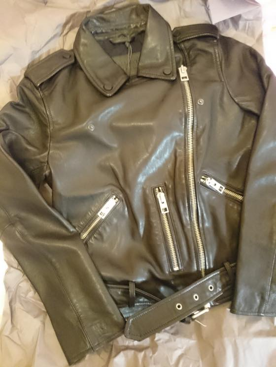
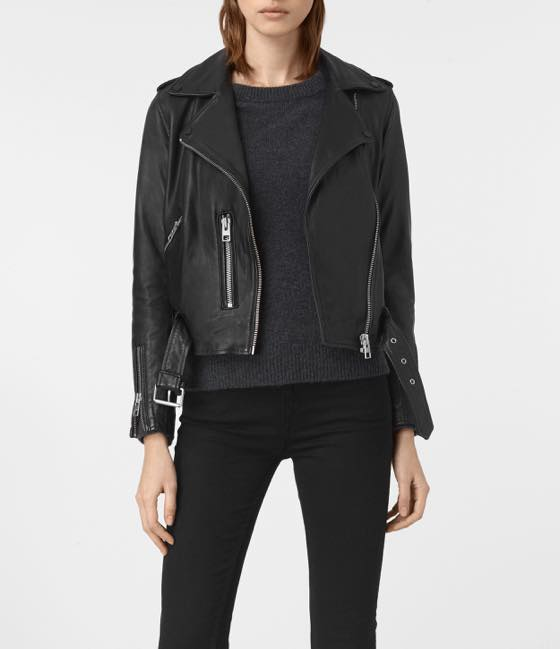
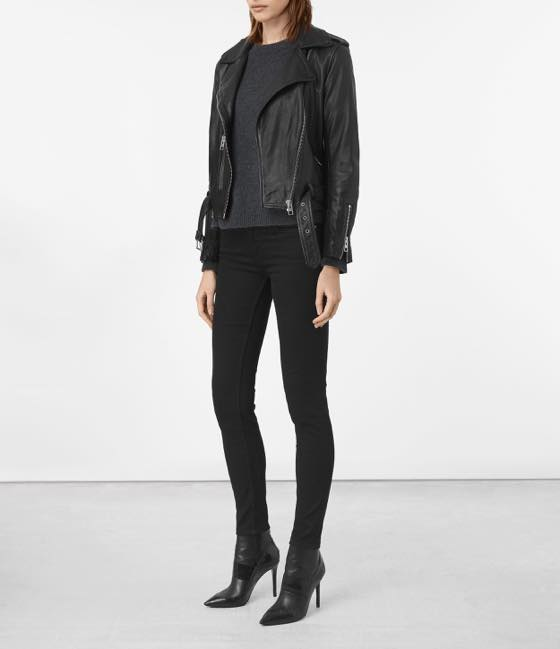
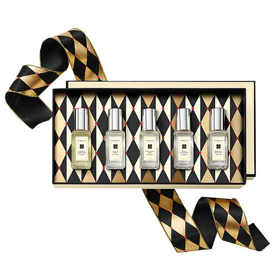
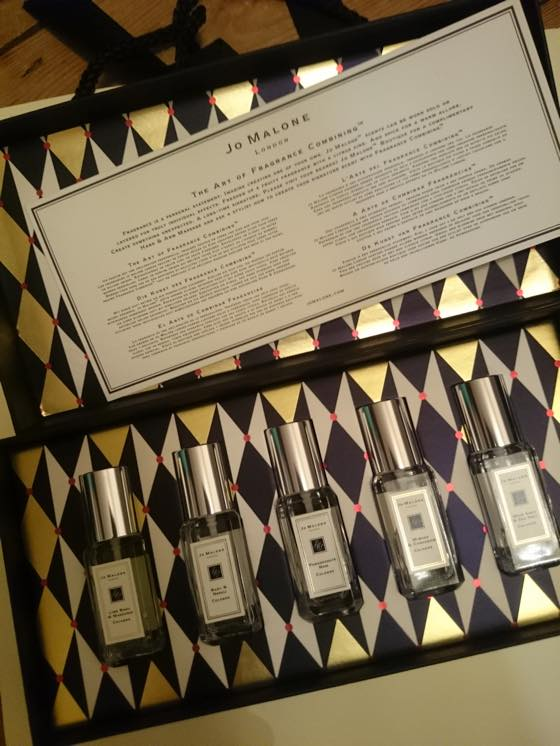

ALLSAINTS:: BALFERN LEATHER BIKER JACKET
이전 포스팅에서 날이 추워지니 퍼코트나 가죽자켓을 사고싶다고 했는데 그래서 샀습니다 (응?)
BIBA 퍼 코트를 사고 일주일도 지나지 않아 올세인츠 가죽자켓 데려옴 ㅋㅋ
정석(?) 깜장 바이커 가죽자켓이 갖고싶었어욤///
지금까지 구입한게 도호 브라운 / 테드베이커 브라운 / 버버리 회색 (이것도 약간 바이커 스타일) / 작년에 구입한 데무 깜장 가죽자켓 - 이지만 모양은 아방방(?)함 - 에 이어 5번째 되어서야 기본 스타일(?) 가죽 자켓을 구입했습니다 빠밤!
차곡차곡 옷장에 가죽자켓이 늘어가는게 뿌듯합니당 :3 헷헷 다음에는 레드 / 핑쿠같은 색을 구입하고 싶...... :p (<-;;;)


요건 올세인츠 웹사이트에서 가져온 사진 두개
코벤트가든 매장서 구입하고 마켓근처 배회하다가 근처 조 말론 매장으로 들어가서 요 미니셋을 사왔습니다.


Jo Malone London Cologne Collection
이번 크리스마스 기프트 패키징이랑 광고 넘 이뻐요 ;ㅂ;
9ml 미니셋 입니다
Set contains:
Lime Basil & Mandarin Cologne, 9ml
Basil & Neroli Cologne, 9ml
Pomegranate Noir Cologne, 9ml
Mimosa & Cardamom Cologne, 9ml
Wood Sage & Sea Salt Cologne, 9ml
이중 우드세이지 & 시솔트 가 젤 내 취향 / 이건 30ml로 하나 더 구입할까 고민중 입니다
11월 초반부터 이것저것 열심히 질렀네요;; 이제 좀 정신차려야겠습니다 ^^;;;
끗!